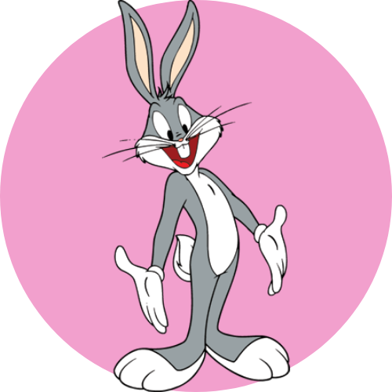

Hi, I'm Bugs Bunny. I'm a nice bunny, confidant and I'm always three steps ahead of everyone else and I have some amazing quirks. My best friend is Daffy Duck. I currently work as the main protagonist of The Looney Tunes Show franchise, along with my friends Daffy and Porky Pig.
About

History
I debuted in film on April 30, 1938, with the short "Porky's Hare Hunt". In it I was young and still lacking so many professional acting talents. With the success of this short, I was able to continue my dream, and I was able to star in over 160 animated shorts between 1940 and 1964 alone. Getting more handsome with each movie!
Curiosities
I shared a stadium with basketball star Michael Jordan in the movie Space Jam. In addition to sharing the stage with other celebrities such as Brendan Fraser and Steve Martin in the movie Looney Tunes — Back in Action.
I collect several awards and recognitions. Like the award for "the best cartoon character of all time", a star on the Walk of Fame, and even a US postage stamp.